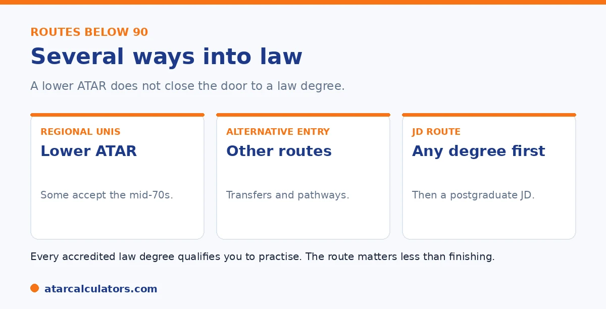

Here is the short version. There is no single lowest ATAR for law. This is because it depends on the university. Many universities accept ATARs well below 90 for an undergraduate LLB, with some regional and online programs taking students from the mid-70s. Beyond that, alternative entry, university transfers. And the postgraduate JD route, which does not use ATAR, open law to almost anyone who finishes a degree.
The high law cut-offs you hear about apply to a few universities. Below 90, law is far more open than its reputation suggests, through several routes.
Below are the pathways into law below 90. To explore your options, use our law ATAR calculator.
Key takeaways
- There is no single lowest ATAR for law.
- Many universities accept ATARs well below 90.
- Some regional programs take students from the mid-70s.
- Alternative entry and transfers offer other routes.
- The JD route does not use ATAR at all.
- Every accredited law degree qualifies you to practise.
There is no single lowest ATAR
First, the key point. There is no single lowest ATAR for law, because it depends on the university. The high cut-offs apply only to the most competitive universities. Many others are far more accessible.

So instead of one number, think in terms of which route fits you. Below are the main ones available below 90.
Universities with lower ATARs
The simplest route is to choose a university with a lower cut-off. Many universities, including regional and online providers, accept ATARs well below 90 for an undergraduate LLB, with some taking students from the mid-70s.
These are accredited degrees that qualify you to practise, just like any other. So a lower ATAR does not mean giving up on law; it may mean choosing a different university. See our full law ATAR guide.
The spread between universities is wider than most students realise. And it is the single most useful fact for anyone with a mid-range ATAR. The most competitive law schools, typically the older Group of Eight universities in the big cities, sit in the high 90s because demand for those specific names is intense. Move beyond that top tier and the cut-offs fall substantially, with many respected law schools admitting students well below those headline figures. Crucially, admission to practise as a lawyer depends on completing an accredited law degree and the practical training that follows, not on which university's name is on it. Employers do notice reputation. But a strong record, from any accredited law school, opens doors, and plenty of successful lawyers did not attend a Group of Eight university. So if your ATAR falls short of the famous cut-offs, widen your list. The realistic question is not "can I do law with this ATAR?" but "which law schools match this ATAR?". And the answer is usually more than you expect.
Alternative entry and transfers
Beyond ATAR, several universities offer alternative entry. This can include adjustment factors that lower the effective ATAR needed, or transfer pathways where you start another degree and move into law after a strong first year.
Some universities set aside several places each year for students transferring in from other degrees. So if you narrowly miss a cut-off, a transfer can be a realistic plan. See our guide on bonus points.
Want to see your realistic law options?
Try the law ATAR calculator →The JD route skips ATAR
The most powerful route of all is the postgraduate Juris Doctor, or JD. It comes after any bachelor's degree and does not use your ATAR. So you can study any degree first, then enter law on the strength of your university results.
This means your Year 12 result need not define your legal career. Many lawyers took this path. See our LSAT and JD guide.
Keeping perspective
The honest message is that no single ATAR closes the door to law. Below 90, you have lower-ATAR universities, alternative entry, transfers, and the JD route all open to you.
And every accredited law degree leads to the same qualification. The route matters far less than finishing. So a result below 90 is a redirection, not a dead end. See our law ATAR guide.
Where lower-ATAR law is offered
Law is offered widely, and regional and outer-metropolitan universities often have cutoffs well below the top schools, sometimes in the 70s and 80s. These programs lead to the same professional qualification as more selective ones.
So students who miss the top-tier cutoffs have many options. A law degree’s value for admission to practise does not depend on the entry cutoff, so a less selective program is a genuine route into the profession.
Check the cutoffs at a range of universities, including regional ones, rather than assuming law requires a top ATAR everywhere. The spread of cutoffs is wide, and many good programs sit well below the headline figures.
Bonus points and adjustment factors
Many universities apply adjustment factors or bonus points that can lift your selection rank above your raw ATAR, for example for certain subjects, your location, or personal circumstances. Near a cutoff, these can make the difference.
So your effective rank for law entry may be higher than your ATAR alone suggests. It is worth checking each university’s adjustment schemes, since they can turn a near miss into an offer.
Transferring into law
If you do not get into law directly, transferring is a common route. Start in another degree, perform well, and apply to transfer into law, either at the same university or another. Strong first-year results can open a door your ATAR did not.
Transfer rules vary, so research them early if this is your plan. But it is a well-worn path: many law students began elsewhere and moved across after proving themselves at university.
Pathway and diploma programs
Some universities offer pathway or diploma programs that lead into law for students who do not meet the direct cutoff. Completing one to the required standard can provide entry into the law degree.
These programs are worth investigating if your ATAR falls short, as they offer a structured second route in. Check each university for what it offers and the standard required to progress into law.
A realistic view of law entry
It helps to keep perspective. Law is competitive at the top, but it is offered widely, and there are many routes in: lower-cutoff programs, adjustment factors, transfers, pathway programs, and the graduate JD.
So a lower ATAR narrows the most selective options without closing off law. With a realistic plan and persistence, studying law remains an achievable goal for a broad range of students, not only those with a top-tier ATAR.
The degree is the same qualification
An accredited law degree qualifies you to seek admission to practise, whatever the university’s entry cutoff. So a law degree from a lower-cutoff or regional university leads to the same professional qualification as one from a top-tier school.
This is the key reassurance for students who miss the top cutoffs. The path to becoming a lawyer runs through an accredited degree and the required practical steps, not through a particular university’s ATAR. The profession is open from many starting points.
Online and part-time options
Some universities offer law with flexible, online or part-time study, which can suit students who need a different route in or a more flexible schedule. These programs still lead to an accredited qualification where they are approved.
If flexibility matters to you, research which universities offer it and confirm the program is accredited. Flexible study widens access to law further, beyond the traditional full-time, on-campus, high-ATAR route.
Common questions
Can I study law with an ATAR below 90?
Yes. Many universities accept ATARs well below 90 for an undergraduate LLB, with some regional and online programs taking students from the mid-70s. Alternative entry, transfers, and the postgraduate JD route are also options.
What is the lowest ATAR for law in Australia?
There is no single figure, because it depends on the university. Some regional and online programs accept students from the mid-70s for an LLB. The JD route does not use ATAR at all, so it has no ATAR floor.
Which universities offer law with a lower ATAR?
Many, including regional and online providers, accept ATARs well below 90, with some from the mid-70s. These are accredited degrees that qualify you to practise. Check each university's current cut-off, as they vary.
Can I transfer into law?
Often, yes. Several universities offer transfer pathways, where you start another degree and move into law after a strong first year, sometimes with places set aside for transfers. So a narrow miss on a cut-off need not end your plans.
Does a low ATAR rule out becoming a lawyer?
No. Lower-ATAR universities, alternative entry, transfers, and the postgraduate JD route are all open below 90. Every accredited law degree leads to the same qualification, so the route matters less than finishing.
Find your pathway into law
See realistic routes into law based on your ATAR. Free, and no signup.
Open the law ATAR calculator →Related guides
This guide is general information for students and parents, not formal admissions advice. ATAR cut-offs, degree structures and entry rules vary by university and change every year. The LSAT applies only to some postgraduate JD programs, not undergraduate law. Any figures here are approximate and based on recent years. So always confirm the current details with each university and your state admissions centre (such as UAC, VTAC, QTAC, SATAC or TISC). Reviewed by the ATARCalculators Editorial Team.